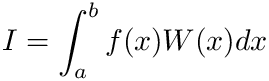

Data Types List
Here are the data types with brief descriptions:
[detail level 12]
| ▼Nbasic | This module will provide some basic convenience routines Description: Submodule Utils |
| Ctimer | Simple timer. Holds start-time, stop-time, and time-difference |
| ▼Ncsplines | Csplines implements interpolation using cubic splines Description: Submodule interpolate |
| Ccsplev | Csplev Performs a spline interpolation in a point or in a table |
| Ccsplevder | Csplev Performs a spline interpolation in a point or in a table |
| Ccubicspline | Type used to keep all information on splines |
| ▼Nfitpack | Fitpack provides a framework for fitting and interpolation using B-Splines. Description: Submodule interpolate |
| Csplev | Splev Computes a B-spline or its derivatives |
| Csplint | Splint Evaluates the definite integral of a B-spline |
| Cunivspline | Type used to keep all information on spline fitting |
| ▼Nfunc_integ | Definition of integrable functions Description: Submodule integrate |
| Cnf_cfunction | Type to encapsulate complex functions and extra arguments |
| Cnf_rfunction | Type to encapsulate real functions and extra arguments |
| ▼Nhistograms | The module histograms provides infrastructure for the calculation of histograms. i.e: a count of frequency |
| Chistog | Type histogram holds the data from an histogram |
| ▼Nmtrandom | Random generator for uniform distributions |
| Crandom | Returns one or several numbers random(state, r) |
| Crng_state | Rng_state holds the state of the generator |
| Cseed | Initializes the generator. Use it as seed(key, state) |
| ▼Npolynomial | Polynomials provides a framework for simple (and quite naive) work with polynomials Further description in Submodule interpolate |
| Cpolyval | Computes the value of the polynomial when applied to a number or list of numbers |
| ▼Nqadaptive | Globally adaptive Simpson integrator. Description: Submodule integrate |
| Ciads | Integration by Adaptive Simpson method of a function by a globally adaptive strategy, using a Simpson rule |
| Ciadsi | Integration by Adaptive Simpson method of a function on a semi-infinite interval, based on iads() |
| ▼Nqsimpson | Routines for trapezoid and simpson integration of both sampled data and functions. Description: Submodule integrate |
| Csimps | Routines for integration of sampled values or functions by using Simpson rule |
| Ctrapz | Routine for integration of sampled values or functions by using the trapezoid rule |
| ▼Nqtanhsinh | Implementation of tanh-sinh integration method. Description: Submodule integrate |
| Cqnthsh | Subroutine qnthsh implements integration by tanh-sinh method |
| ▼Nquadpack | Wrapper of (slightly modified) QUADPACK routines Description: Submodule integrate |
| Cc_qp_extra | Type used to pass extra (optional) information with the integration routines |
| Cd_qp_extra | Type used to pass extra (optional) information with the integration routines |
| Cqag | Globally adaptive integration routine without weights |
| Cqagp | Subroutine qagi is a globally adaptive, automatic interval subdivisions with epsilon extrapolation without weights for an infinite interval |
| Cqags | Subroutine qags is a globally adaptive, automatic interval subdivisions with epsilon extrapolation without weights |
| Cqawc | Subroutine qawc computes the Cauchy principal value |
| Cqawf | Qawf computes Fourier integrals over the interval [ A, +Infinity ) |
| Cqawo | Subroutine qawo is designed for integrands with an oscillatory factor,  where |
| Cqaws | Subroutine qaws estimates integrals with algebraico-logarithmic endpoint singularities given by the weight function 
|
| Cqcheb | Subroutine qcheb computes the coefficients of the Chebyshev series expansion of degrees 12 and 24 of a function using a fast Fourier transform method
where |
| Cqextr | Subroutine qextr carries out the Epsilon extrapolation algorithm |
| Cqgk | Routine to perform the integration of a function by Gauss-Kronrod rule |
| Cqk15w | Routine to perform the integration of a weighted function by 15-points Gauss-Kronrod rule |
| Cqng | Qng estimates an integral using non-adaptive integration |
| ▼Nsorting | Sort provides a framework for searching elements and sorting arrays |
| Csearchsorted | Searchsorted: Find index where an element should be inserted in an array to maintain order |
| ▼Nstrings | This module defines functions to manipulate strings of characters. Description: Submodule Utils |
| Cstr | str() converts a number (integer or real) to a string |
 or
or 
![\[ f(x) = \sum_{k} (\mathrm{Cheb}(k) T_{k-1}(x) , \]](form_74.png)
 is the Chebyshev polynomial of degree k
is the Chebyshev polynomial of degree k